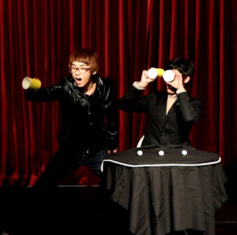

할루(HaLLu)는 ‘환영’이라는 뜻의 할루시네이션에 ‘퍼포먼스’를 접목시켜서 재미있고 새로운 형식의 마술 공연을 지향하자는 뜻입니다.
2009년 마술 동호회로 시작해서 2011년에 정식 동아리로 승격, 현재 일주일에 2번 정모를 통해 자체적으로 마술을 배우고 있으며, 매 학기 축제마다 cafe를 열고, 1년에 1번 정기공연을 하고 있습니다. 또한 HaLLu는 병원, 교회, 복지센터, 보육원 등 교외에서 무료로 공연을 하고, 방학마다 MNT라는 문화선교단체에 속해 태국에 선교를 가고 있습니다.
보통 마술은 춤, 노래와 달리 생소한 장르입니다. 주변에서 흔히 볼 수 있는 것도 아니기 때문에 시작하길 어려워합니다. 하지만 선배들이 마술을 가르치고, 자신만의 스타일을 만들어 갈 수 있기 때문에 누구든지 열정을 갖고 있다면 1년 안에 수준급 마술사가 될 수 있습니다. 마술에 관심이 있는 모든 분들 HaLLu로 연락 주세요.